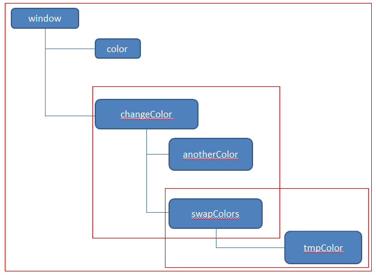
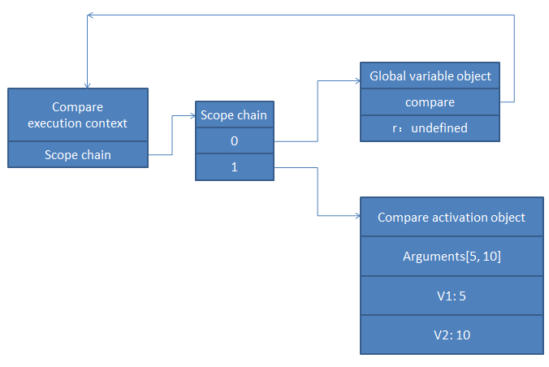

前言
本来想把这个与上篇博客写到一起的，但是考虑到是两个知识点还是分开算了，于是我们继续今天的学习吧。
基本类型与引用类型
ECMAScript的的变量有两种类型：
基本类型（值类型）：简单数据段
引用类型：多个值构成的对象
在变量赋值结束后，解析器必须知道这个变量时基本数据类型还是引用类型，需要注意的是string在js中是值类型。
复制的差异
值类型的复制会在内存中创建副本，所以彼此间不会影响，但是引用类型只是将变量的引用复制，其指向的仍然是一个对象，会相互影响：
1 var a = {}; 2 a.a = 6; 3 var b = a; 4 b.a = 66; 5 alert(a.a);//66
这是一个典型的例子，值类型的就不举例了。
执行环境与作用域
PS：作用域是面试官的最爱，也是我们经常栽跟头的地方，这块我们有必要搞清楚
执行环境（execution）是javascript中非常重要的一个概念。
执行环境定义了变量或者函数有权限访问其他数据，决定了他们各自的行为。
每一个执行环境都有一个与之关联的变量对象（variable object），环境中定义的所有变量和函数都保存到这个对象中，虽然代码无法访问，但是解析器会用到他。
在web浏览器中window对象便是我们的全局执行环境（最外围的执行环境，宿主不同便有差异，比如node.js可能就不一样），因此所有全局变量和函数都是作为window对象的属性或者方法创建的。
销毁
某个执行环境中的所有代码执行完毕，该环境便销毁，变量对象中的属性和函数也就完蛋了（闭包会让情况有所不同）。
函数作用域
每个函数都有自己的“作用域”范围（执行环境），当执行流进入一个函数时，函数的环境就会进入一个环境栈中，在函数执行完毕后，栈会将其环境弹出，控制权又重新交回之前的环境。ECMAScript程序的执行流就是这个机制在控制。
作用域链
当代码在一个环境中执行时会创建变量对象（variable object），并且该对象拥有一个作用域链，作用域链的用途是保证对执行环境有权限访问的所有变量与函数的有序访问。
作用域的最前端便是当前执行代码所在环境的变量对象，若这个变量时函数，就将其活动对象（activation object）作为变量对象，
活动对象最开始只包含一个变量arguments，整个作用域链会一直向上延伸直到window，这里上一个经典的例子：
1 var color = 'blue'; 2 function changeColor() { 3 var anotherColor = 'red'; 4 function swapColor() { 5 var tmpColor = anotherColor; 6 anotherColor = color; 7 color = tmpColor; 8 } 9 swapColor(); 10 } 11 changeColor();
以上代码涉及三个执行环境（execution context）：
① 全局环境
② changeColor局部环境
③ swapColor局部环境
全局变量中有一个color和一个函数changeColor
changeColor中有一个anotherColor变量和swapColor函数
swapColor函数中有tmpColor，但是他可以访问以上所有的变量

我们看到三个框了，内部环境可以通过作用域链访问所有外部环境，但是外部环境不能访问内部的，js中只有函数能产生局部作用域。
延长作用域链
有些语句可以在作用域链顶端临时增加一个变量对象，该变量对象会在代码执行后被移除，以下情况会引起作用域链加长：
① try-catch的catch块
② with语句
这两个语句都会在作用域链前端增加一个变量对象，对with语句来说，会将指定对象添加到作用域链中，对catch来说，会创建一个新的变量对象，其中包含被抛出的错误对象的声明。
1 function buildUrl() { 2 var q = '?p=true'; 3 with (location) { 4 var url = href + q; 5 } 6 return url; 7 }
在此with语句接收的是location对象，因此其变量对象就包含了location对象的属性和方法，而且被放到作用域链的前端了，我们的href就是有意义的了，相当于location.href。
闭包
作用域链与闭包在一起后情况又会有所不同，在此我们再来看看闭包是什么：
闭包是指有权限访问另一个函数作用域中变量的函数：
在函数内部创建函数，使用到了外部的变量，并且将此函数返回，就形成了闭包。
我认为闭包产生的原因是因为想私有化变量，但是提供一个对外的访问接口，所以提出了闭包的概念
1 function Klass() { 2 var name; 3 var getName = function () { 4 return name; 5 }; 6 var setName = function (n) { 7 name = n; 8 }; 9 return { getName: getName, setName: setInterval }; 10 }
比如这个应用，是比较常见的，name应该是私有的，但是我们要将其接口公布出来。
这里，当Klass被调用了，即使他返回了，但是内部函数仍然可以访问name变量，内部函数包含了外部Klass函数的作用域，我们来理一理这个东西：
当某个函数调用时会创建一个执行环境（execution context）以及相关的作用域链。
然后，使用arguments和其它命名参数的值来初始化函数的活动对象（activation object）。
在作用域链中，外部函数的活动对象始终处于第二位，可能还有第三位第四位。。。
在函数执行过程中，为了读取和写入变量的值，就需要在作用域链中查找变量
1 function compare(v1, v2) { 2 if (v1 < v2) { 3 return -1; 4 } else if (v1 > v2) { 5 return 1; 6 } else { 7 return 0; 8 } 9 } 10 var r = compare(5， 10);
以上定义了compare函数，然后在全局下调用了他，第一次调用时，会创建this、arguments、v1、v2的活动对象。
全局执行环境的变量this、r、compare在compare执行环境作用域链的第二位：

后台的每一个执行环境都有一个表示变量的对象——变量对象。
全局环境的变量对象始终都在，像compare这种局部变量的变量对象只在函数执行时候存在
在创建compare函数时，会创建一个预先包含全局变量的作用域链，这个作用域链被保存在内部的[[Scope]]属性中
当调用compare函数时，会为函数创建一个执行环境，然后复制函数的[[Scope]]属性中的对象构建新的执行环境的作用域链
为此又有一个活动对象（在此作为变量对象使用）被创建并推入执行环境作用域链的最前端。
上例中，对于compare执行环境而言，其作用域链包含两个变量对象：
1 本地活动对象
2 全局变量对象
一般来说，函数执行完毕后，局部活动对象就会被销毁，内存中仅保存全局作用域，但是闭包让情况有所转变：
在函数内部定义的函数将会包含函数（外部函数）的活动对象添加到它自己的作用域链中。
所以在Klass内部定义的getName与setName的作用域链中事实上是包含了外部Klass的活动对象的。
在函数Klass返回后，其中的getName作用域链被初始化为包含Klass函数的活动对象和全局变量对象
这样getName就可以访问Klass函数中的所有变量，这样做的结果就是阻止了Klass执行结束后销毁其name变量。
换句话说，Klass的执行环境与其作用域链会被回收，但是其activation object会被保留在内存中，知道getName被销毁后才回收，最后Klass的活动对象才被销毁
PS：显然闭包占有更多的资源，若是不及时回收会对性能造成影响，这里各位要小心才行。
闭包与变量
作用域链的这种配置机制也产生了一个影响不到的问题：
闭包只能取得包含函数（外部函数）中变量的最后一个值。
因为闭包所保存的是函数的活动对象，是整个变量对象，而不是某一个值
1 function createFunc() { 2 var r = []; 3 for (var i = 0; i < 10; i++) { 4 r[i] = function () { 5 return i; 6 }; 7 } 8 return r; 9 }
这是一有趣的代码，我们这里返回了一个数组，数组里面装了10函数，但是我们这是个函数保存的是同一个外部函数的活动对象，而i最后的值是10，所以所有函数最后打印出来的都是10。这里要怎么处理各位都知道了，我还是贴个代码吧：
1 function createFunc() { 2 var r = []; 3 for (var i = 0; i < 10; i++) { 4 r[i] = (function (num) { 5 return function () { 6 return num; 7 } 8 })(i); 9 } 10 return r; 11 }
这里把各个闭包函数保存的活动对象接不相同，所以产生了不同的结果。
写到此处我感觉我所知道的东西都差不多了，若是您有什么补充，或者我这里有什么问题，请提出来。下面我们来演练一番
做几道题吧
好了，说了这么多虚的，我们来一点干货作为本文的结束吧，完了我就休息了，等晚上再写点东西就结束了。
settimeout与setInterval
1 var a = 6; 2 setTimeout(function () { 3 alert(a); 4 a = 666; 5 }, 1000); 6 a = 66; 7 8 9 var a = 6; 10 setInterval(function () { 11 alert(a); 12 a = 666; 13 }, 1000); 14 a = 66;
我这里稍微修改了一下代码，我们来看看：
第一段代码是上次寒冬老师问我的问题，因为延时函数会后面点执行，所以打印的是66
而第二段代码有所不同的是，先打印的是66，后面便一直是666了
第二题
1 var tt = 'aa'; 2 function test(){ 3 alert(tt); 4 var tt = 'dd'; 5 alert(tt); 6 } 7 test();
这道题有点意思哦，他还考察了变量声明提前的问题。
其中var tt的定义会提前，这道题相当于：
1 var tt = 'aa'; 2 function test(){ 3 var tt； 4 alert(tt); 5 tt = 'dd'; 6 alert(tt); 7 } 8 test();
在互动变量中应该使用内部tt，所以第一次是undefined第二次是dd，这道题本身不难，但是容易引起混淆：
1 var a = '11'; 2 var a; 3 alert(a);//11
我们这个重复定义不会覆盖其值的约定可能会给你带来迷糊，这里要将之看着两个国家的人。
我们稍稍变形：
1 var a = 10; 2 function test() { 3 a = 100; 4 alert(a); 5 alert(this.a); 6 var a; 7 alert(a); 8 } 9 test();
这个代码相当于：
1 var a = 10; 2 function test() { 3 var a; 4 a = 100; 5 alert(a);//100 6 alert(this.a);//10 7 alert(a);//100 8 } 9 test();
我们只看this.a，这里this指向的是window，至于this的东西，我们后面点再说。
第三题
1 f = function () { return true; }; 2 g = function () { return false; }; 3 (function () { 4 if (g() && [] == ![]) { 5 f = function f() { return false; }; 6 function g() { return true; } 7 } 8 })(); 9 alert(f()); // true or false ?
这道题看上去有点乱。。。考察了很多东西，我们先说说其中的一个有问题的地方：
不要在if里面定义function请使用函数表达式，在if中定义function会让结果难以估计
javascript可能会修正其中的程序而忽略if判断，但是这不是我们这里要研究的，但是他直接影响我做题的思路啊，这里果断给把题改了：
1 f = function () { return true; }; 2 g = function () { return false; }; 3 (function () { 4 if (g() && [] == ![]) { 5 f = function f() { return false; }; 6 g = function() { return true; } 7 } 8 })(); 9 alert(f()); // true or false ?
题目愿意是什么我们不管了，现在就这样做。其中第五行的function f()中的f会被忽略掉，他还有个坑爹的地方是：
var s1 = g();//false var s2 = g() && []; //false var s3 = ![]; //false var s4 = g() && [] == ![]; //false var s5 = (g() && []) == ![]; //true
这道题稍不注意就要完蛋，s4为什么是false我都猜不透。。。所以答案是true了，这道题我没有摸透，各位自己去看看吧。
第四题
1 function say667() { 2 // Local variable that ends up within closure 3 var num = 666; 4 var sayAlert = function () { alert(num); } 5 num++; 6 return sayAlert; 7 } 8 9 var sayAlert = say667(); 10 sayAlert();
这道题有点意思，与前面的循环闭包的例子类似，答案是667
第五题
1 var foo = { 2 bar: function() { 3 return this.baz; 4 }, 5 baz: 1 6 }; 7 (function() { 8 return typeof arguments[0](); 9 })(foo.bar)
刚刚无意间看到了这道题，很有点意思的我们来详细理一理：
① 下面调用函数时候，使用了前面的对象作为参数
② 对象里面却是一个函数，而且使用了内部的属性
③ 返回时候调用了该函数，但是我们知道此时匿名函数的内部this指向的是windows
window没有baz变量，所以返回的是undefined
补充：
我刚刚把这道题看浅了，我们再来理一理，我们说第九行将函数作为参数传递给我们的arguments，经过昨天的学习，我们知道相当于变量赋值：
var a = foo.bar;
如此一来，内部的函数与外部的foo就没有一毛钱的关系了，我们这里改下代码：
1 var foo = { 2 bar: function () { 3 alert(this); 4 var s = ''; 5 return this.baz; 6 }, 7 baz: 1 8 }; 9 (function (func) { 10 // alert(func()); 11 alert(arguments[0]()) 12 })(foo.bar);
大家注意看第10,11行调用方式带来的不同！
① 使用func方式调用的话，3行this指向为window
② 使用arguments[0]()调用的话，this指向为Arguments
不管怎样，baz他们都是找不到的所以为undefined，至于下面这个有一点点差异。
我们不管怎么调用都会返回111，因为他确实是有值的，不要被他所外衣所疑惑，但是这里还真有个疑惑点：
我们以func方式调用时候，会为window增加一个baz=111的属性，但是使用arguments[0]的方法调用我就搞不清会为谁增加属性了，各位可以看看。。
经过最后测试，发现：
1 var foo = { 2 bar: function () { 3 return this.baz; 4 }, 5 baz: 1 6 }; 7 (function (func) { 8 arguments['baz'] = 12; 9 alert(arguments[0]()); 10 var s=''; 11 })(foo.bar);
他应该是给arguments赋值了，但是arguments是不能乱操作的，所以断点根本看不到，但是却被读取了，这样改了后会打印12
第六题
1 var foo = { 2 bar: function() { 3 this.baz=123; 4 return this.baz; 5 }, 6 baz: 1 7 }; 8 (function() { 9 10 return typeof arguments[0](); 11 })(foo.bar)
这道题是上面那条的变形，这道题很耍赖的，各位看看答案是什么呢？
PS：5,6题好像水有点深，我要理一理先，囧
结语
本文暂时到这里了，请各位也上两道与作用域有关的面试题呗！